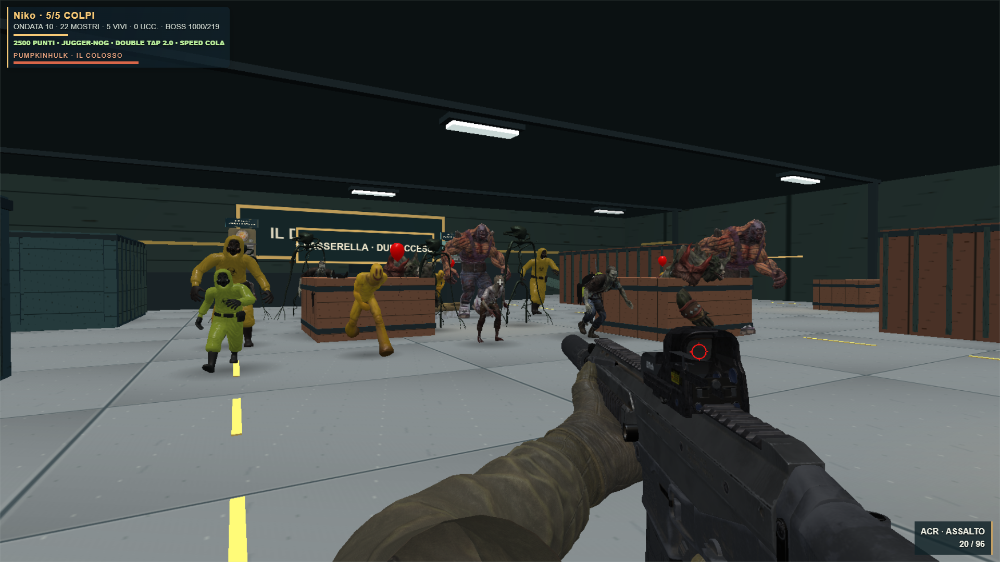
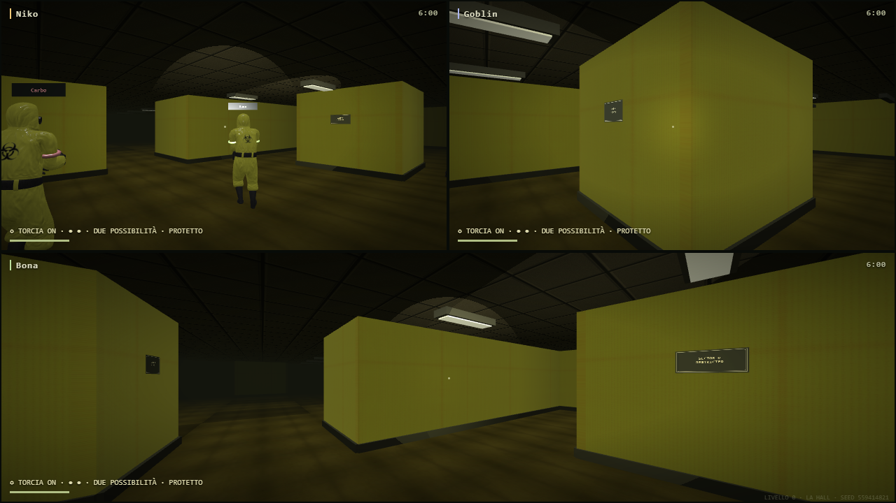
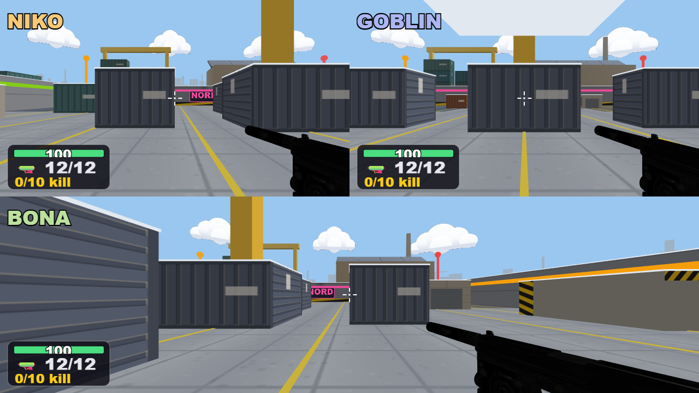

Solo le vostre visuali
Da solo hai tutto lo schermo. Con gli amici ogni giocatore umano ha la propria visuale, con pad o telefono. I bot restano avversari nel mondo, senza occupare riquadri. I giochi a camera condivisa mantengono il proprio funzionamento.
36.8 → 60.0 FPSOrda · da cinque visuali alla tua
59.3 FPSTre umani, due bot
22 mostri · 5 partecipantiStessa risoluzione nel confronto
RTX3050, campioni di6secondi del renderer reale. Finestra1920×1080, interno1669×939 invariato. Il test non include l'intera simulazione multiplayer. Nessuna riduzione della qualità per ottenere questi risultati.
Typecheck e build superati; verificati1,3e5umani nei renderer di Backrooms, Sparatoria e Ribaltati, oltre ai campioni Orda. Dati e verifiche · Apri il gioco

Orda · una visuale, gli altri quattro partecipanti restano nel mondo
Backrooms · tre umani e due bot, soltanto tre riquadri
Sparatoria · tre visuali umane con HUD e armi separati